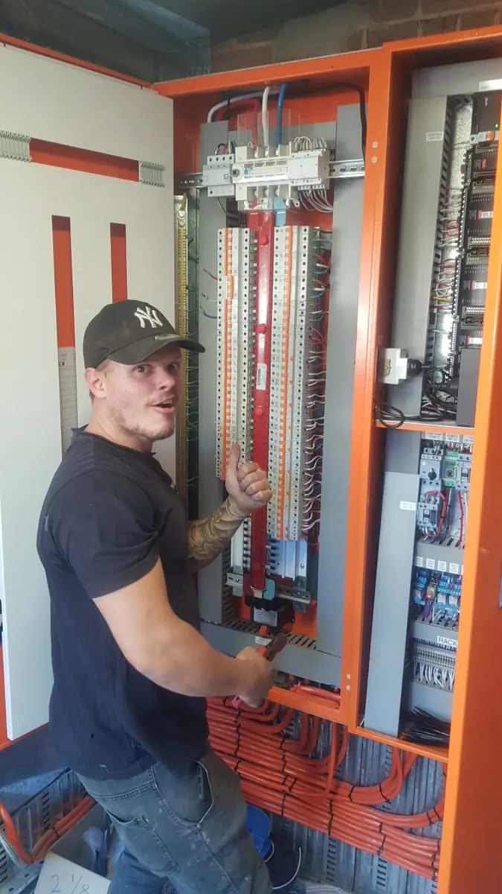
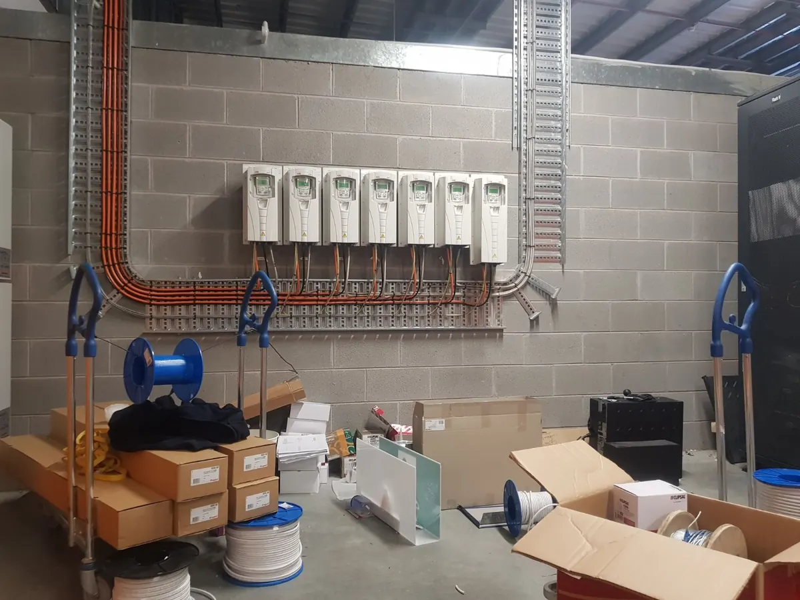
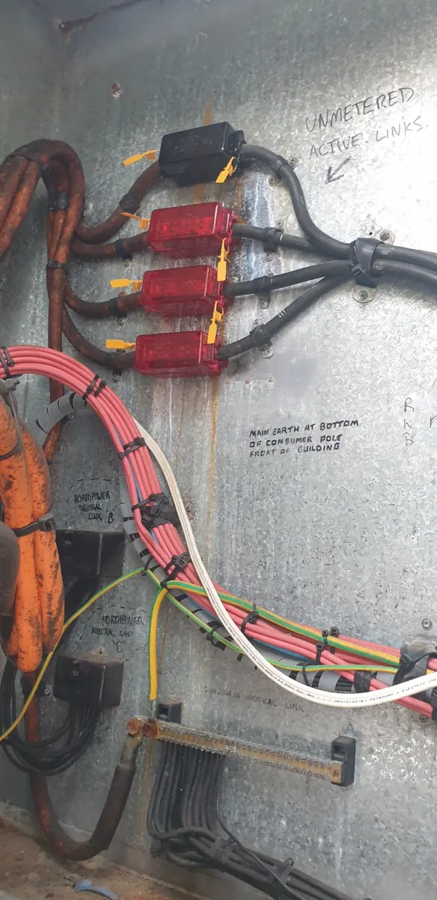
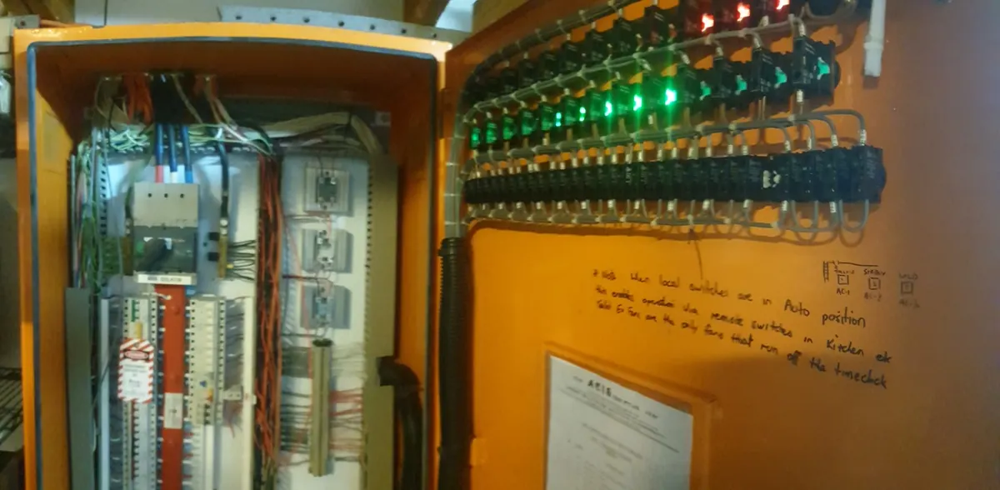

Keep the business running. Find the fault. Make the next step clear.
Commercial electrical work often starts with a practical operational problem: equipment is down, a circuit is failing, lighting needs attention or a small upgrade has become urgent. The commercial pathway is designed around fast understanding and clear next steps.
What this service covers.
Faults & breakdowns
Electrical diagnosis when circuits, equipment or parts of the site stop working as expected.
Maintenance
Practical ongoing repairs and small works for local businesses and managed properties.
Lighting & power
Repairs, additions and upgrades for operational business spaces.
Fit-outs & changes
Electrical alterations when a tenancy, workspace or business layout changes.
Commercial electrical work is often technical.
The commercial archive includes larger switchboards, controls, drives and diagnostic work — useful proof that this service extends beyond basic shop power and lighting.





Common questions.
Do you work with shops and local businesses?
Yes. Commercial faults, maintenance and electrical alterations are part of the service range.
Can you investigate electrical equipment faults?
Where the issue falls within electrical diagnosis and repair capability, yes. The first step is understanding the equipment and symptom.
Can photos help with a commercial enquiry?
Yes. Switchboards, equipment data plates, failed components and the surrounding installation can all be useful context.
Commercial Electrical across Byron Bay and nearby Northern Rivers.
This service is available across the main Berryman Electrical service area, including the locations below.